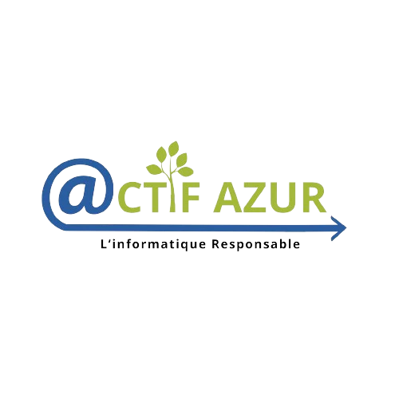
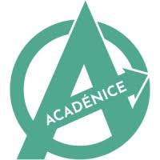
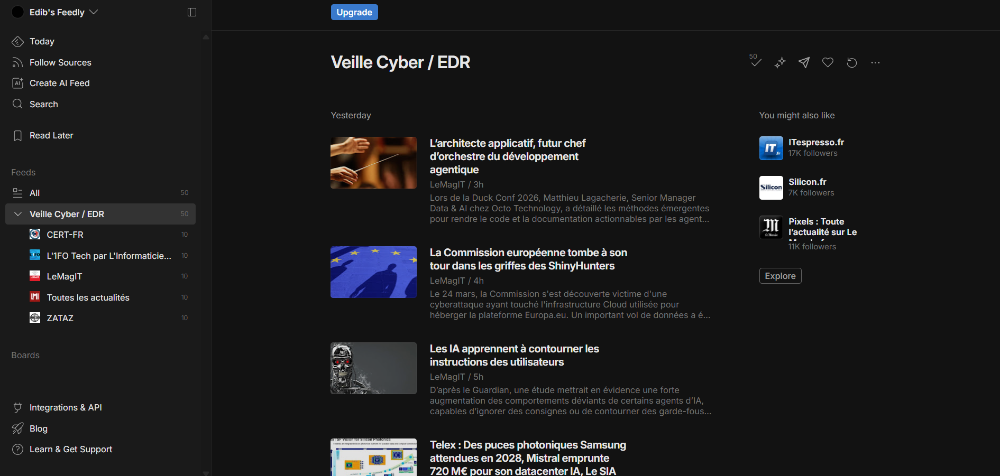
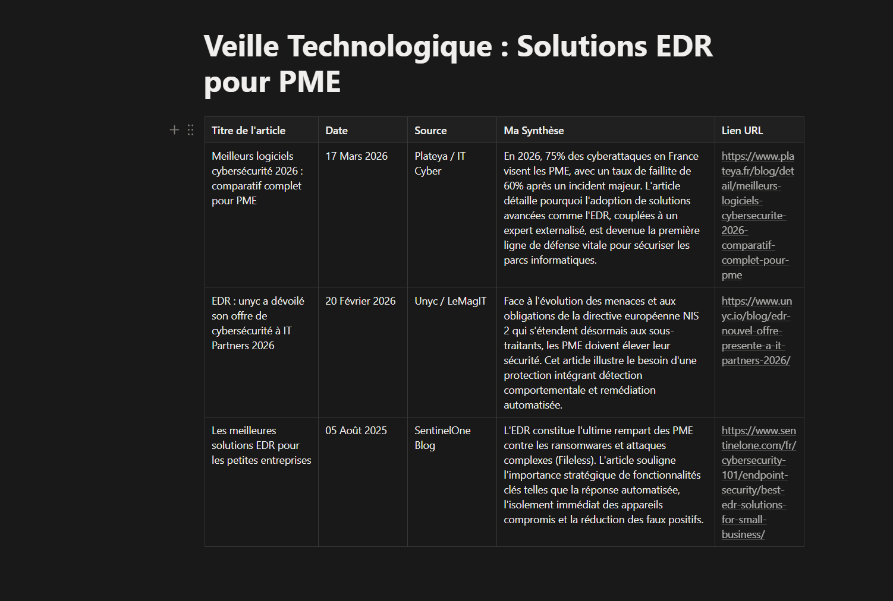

À propos de moi
Passionné par les réseaux, la cybersécurité et les technologies de l'information, je poursuis actuellement un BTS SIO option SISR à IRIS au sein du campus Mediaschool. Curieux, rigoureux et motivé, je souhaite approfondir mes compétences en administration systèmes et réseaux, et me spécialiser dans la cybersécurité.
Compétences clés
- Administration réseaux & systèmes
- Sécurité informatique
- Virtualisation & Cloud
- Automatisation
Objectifs professionnels
- Acquérir un maximum de compétences dans le domaine des réseaux
- Devenir DevOps ou administrateur systèmes et réseaux
- Intégrer une entreprise pour développer mes compétences
Mon Parcours
Une trajectoire évolutive de formation
Baccalauréat STI2D
2023
Lycée Guillaume Apollinaire
Systèmes d'Information & Numérique
BTS SIO SISR
2024 – 2026
IRIS – Campus Mediaschool
Réseaux, systèmes & cybersécurité
Bachelor Bac +3
2026 – 2027
IRIS – Campus Mediaschool
Administrateur d'infrastructures
À venirMaster Bac +5
2027 – 2029
IRIS – Campus Mediaschool
Expert en Cybersécurité
À venirMa Formation - BTS SIO SISR
Services Informatiques aux Organisations
Campus Mediaschool Nice
BTS SIO – Option SISR
Solutions d'Infrastructure, Systèmes et Réseaux
Le BTS Services Informatiques aux Organisations (SIO) option SISR est une formation professionnalisante dispensée à IRIS, école spécialisée en informatique au sein du campus Mediaschool de Nice. Cette filière forme des techniciens capables de gérer, sécuriser et maintenir des infrastructures informatiques modernes.
Compétences développées
- Gestion et sécurisation des réseaux et serveurs
- Virtualisation, déploiement de systèmes, cloud
- Automatisation, scripts, supervision
- Support technique et gestion de parc informatique
Grâce à cette formation, de solides compétences sont acquises en administration systèmes et réseaux, cybersécurité, virtualisation, gestion de projets IT et support utilisateur, permettant une intégration rapide dans le monde professionnel.
En savoir plus sur IRISMes Compétences Techniques
Compétences acquises durant le BTS SIO SISR
Systèmes & Virtualisation
- Linux (Debian, Ubuntu)
- Windows Server (AD, DHCP, DNS)
- Active Directory & GPO
- VMware & VirtualBox
- Docker (conteneurisation)
Réseaux & Infrastructure
- TCP/IP, modèle OSI
- Routage & VLAN
- VPN & accès distants
- Wireshark (analyse réseau)
- Supervision réseau
Sécurité & Protection
- Pare-feu & filtrage
- Sauvegardes & restauration
- Cybersécurité (bonnes pratiques)
- Gestion des accès & droits
- Veille technologique EDR
Outils & Développement
- Git & GitHub (versioning)
- Bash & PowerShell (scripting)
- GLPI (gestion de parc)
- HTML, CSS, JavaScript
- Python & SQL (notions)
Mes Réalisations Professionnelles
2ème année BTS SIO SISR
Infrastructure réseau sécurisée (802.1X)
IRIS Mediaschool
Authentification 802.1X avec serveur RADIUS sur Debian pour sécuriser les accès réseau.
Portail de virtualisation WebVirtCloud
IRIS Mediaschool
Déploiement d'un portail web KVM pour la gestion de VM par les étudiants.
Support technique & gestion des incidents
Stage ActifAzur
Diagnostic, réparation matérielle/logicielle et remastérisation de postes clients.
Conception du portfolio professionnel
Projet personnel
Site web responsive centralisant CV, réalisations et veille technologique.
1ère année BTS SIO SISR
Borne interactive NutriFit (Mode Kiosk)
Projet inter-spécialités
Déploiement système Linux verrouillé pour une borne de salle de sport.
Infrastructure serveur Classcord
Projet inter-spécialités
Serveur Linux pour une messagerie locale type Discord.
Mes Stages
Expériences professionnelles durant le BTS SIO

Technicien Support Informatique
ActifAzur – Antibes
Missions principales
- Réparation de PC portables en atelier
- Réinstallation complète de Windows
- Installation et mise à jour des pilotes
- Service après-vente (SAV)

Technicien Systèmes & Réseaux
Acadénice
Missions principales
- Déménagement de tout l'équipement informatique
- Reconfiguration complète du réseau et des postes
- Installation et configuration de systèmes Linux
- Tests de bon fonctionnement et documentation
Veille Technologique
Se tenir informé pour rester performant
Les solutions EDR face aux cybermenaces visant les PME
Endpoint Detection and Response : protéger les terminaux contre les menaces modernes
1 Problématique
Pourquoi les PME sont-elles la cible privilégiée des cyberattaques ?
Les ransomwares et les attaques "Zero-Day" rendent les antivirus classiques (basés sur des signatures) obsolètes. Les PME, souvent moins protégées que les grandes entreprises, deviennent des cibles de choix. L'EDR répond à ce besoin en analysant le comportement plutôt que de chercher des virus connus.
Solution de sécurité qui surveille les terminaux (PC, serveurs) en temps réel, détecte les comportements suspects et peut isoler automatiquement une machine infectée.
2 Ma Démarche de Veille
Une veille "Push" automatisée : l'information vient à moi.
Capter
Sources d'information spécialisées
- Flux RSS de sites spécialisés (Le Monde Informatique, ZATAZ, LeMagIT)
- Alertes officielles CERT-FR et ANSSI
- Newsletters cybersécurité
Filtrer
Agrégation et tri de l'information
- Feedly pour centraliser tous les flux RSS
- Filtres par mots-clés (EDR, ransomware, PME)
- Lecture quotidienne des titres
Stocker
Organisation et synthèse
- Notion pour classer par thématiques
- Fiches de lecture synthétiques
- Archivage des articles pertinents
📸 Preuves de ma démarche (cliquez pour agrandir)

Mon agrégateur Feedly

Mon organisation Notion
3 Synthèse Technologique
❌ Antivirus Classique
- Basé sur des signatures connues
- Ne détecte que les menaces répertoriées
- Inefficace contre les attaques Zero-Day
✅ EDR (Analyse Comportementale)
- Surveille le comportement du système
- Détecte les anomalies (ex: chiffrement massif)
- Isolation automatique des machines infectées
Leaders du marché EDR
4 Bilan & Apport Personnel
Élargissement des compétences
Acquisition d'une culture de la cybersécurité "Endpoint" et compréhension des enjeux pour les PME.
Impact sur mes pratiques
Sensibilisation à l'architecture "Zero Trust" (ne faire confiance à personne par défaut) que j'applique dans mes projets.
Méthodologie acquise
Capacité à mettre en place une veille automatisée et structurée sur n'importe quel sujet technologique.